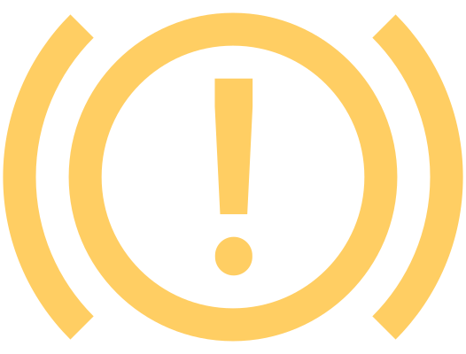

Stationnement dans des pentes fortement inclinées

clignote
Message concernant une position de stationnement sur une pente fortement inclinée
Chercher une autre place de stationnement moins inclinée.

Défaut du frein de stationnement

allumé
Message concernant une erreur de frein de stationnement
Arrêtez le véhicule.
Coupez et remettez le contact.
Vérifier que le frein de stationnement électronique fonctionne :
Sélection d’un mode quelconque de la boîte automatique
Activation manuelle du frein de stationnement électronique

Si les conditions suivantes sont remplies, le frein de stationnement électronique fonctionne correctement. La poursuite du trajet est alors possible :
Lors de l’activation, le symbole
 s’allume dans le combiné d’instruments.
s’allume dans le combiné d’instruments.Lorsque le mode de la boîte automatique est sélectionné, le symbole
 s’éteint.
s’éteint.Le symbole ne s’allume
 pas dans le combiné d’instruments.
pas dans le combiné d’instruments.
Si le problème avec le frein de stationnement électronique persiste :
Garer le véhicule en lieu sûr, de préférence sur une surface plane.
Bloquer le véhicule pour empêcher tout déplacement.
Faites appel à l’assistance d’un atelier spécialisé.

allumé
Message concernant une erreur de frein de stationnement
Faites appel à l’assistance d’un atelier spécialisé.
Bruit lors de l’utilisation du frein de stationnement
Il est normal d’entendre du bruit lors de l’utilisation du frein de stationnement. Il ne s’agit pas d’un dysfonctionnement.
La batterie 12 volts du véhicule est déchargée, le frein de stationnement ne peut pas être désactivé
Connecter la batterie 12 volts du véhicule à une source de courant, par exemple à la batterie 12 volts d’un autre véhicule.